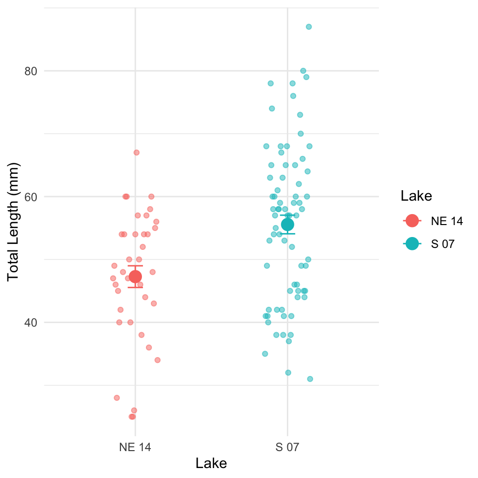
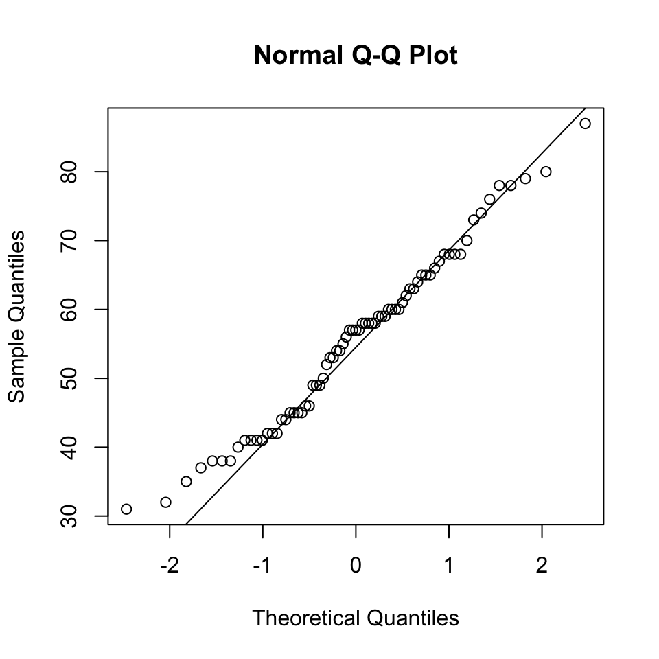
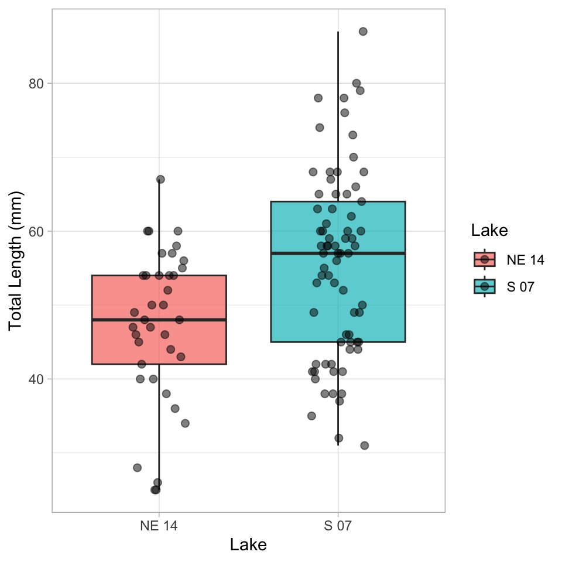
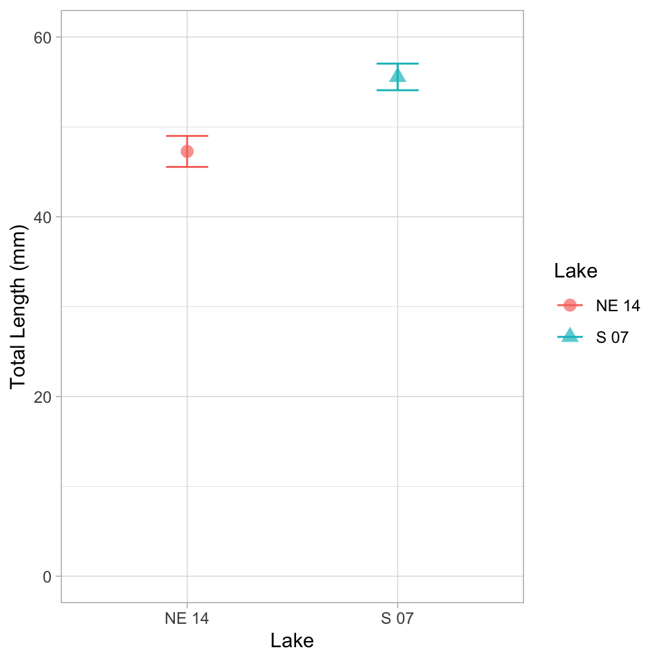

Welch’s t-test (also known as Welch’s unequal variances t-test) is an adaptation of the standard two-sample t-test that is designed to provide a valid test when the two groups have unequal variances. This is particularly important because the assumption of equal variances is often violated in real-world data.
While the standard two-sample t-test makes the following comparison:
\(H_0: \mu_1 = \mu_2\)\(H_A: \mu_1 \neq \mu_2\)
Where:
\(H_0\) is the null hypothesis stating that the population means are equal
\(H_A\) is the alternative hypothesis stating that the population means are different
\(\mu_1\) is the population mean of the first group
\(\mu_2\) is the population mean of the second group
\(\bar{x}_1\) is the sample mean of the first group
\(\bar{x}_2\) is the sample mean of the second group
\(s_1^2\) is the sample variance of the first group
\(s_2^2\) is the sample variance of the second group
\(n_1\) is the sample size of the first group
\(n_2\) is the sample size of the second group
The key difference from the standard t-test is that Welch’s t-test does not use a pooled variance estimate, making it more robust when the variances differ between groups.
The degrees of freedom for Welch’s t-test are calculated using the Welch-Satterthwaite equation:
── Conflicts ────────────────────────────────────────── tidyverse_conflicts() ──
✖ dplyr::filter() masks stats::filter()
✖ dplyr::lag() masks stats::lag()
✖ dplyr::recode() masks car::recode()
✖ purrr::some() masks car::some()
ℹ Use the conflicted package (<http://conflicted.r-lib.org/>) to force all conflicts to become errors
library(broom)# Load the datasculpin_df <-read_csv("data/t_test_sculpin_s07_ne14.csv")
Rows: 110 Columns: 5
── Column specification ────────────────────────────────────────────────────────
Delimiter: ","
chr (2): lake, species
dbl (3): site, length_mm, mass_g
ℹ Use `spec()` to retrieve the full column specification for this data.
ℹ Specify the column types or set `show_col_types = FALSE` to quiet this message.
# Preview the datahead(sculpin_df)
# A tibble: 6 × 5
site lake species length_mm mass_g
<dbl> <chr> <chr> <dbl> <dbl>
1 109 NE 14 slimy sculpin 47 0.7
2 109 NE 14 slimy sculpin 49 0.9
3 109 NE 14 slimy sculpin 46 0.7
4 109 NE 14 slimy sculpin 28 0.15
5 109 NE 14 slimy sculpin 45 0.65
6 109 NE 14 slimy sculpin 40 0.3
Let’s visualize our data to better understand the distributions and differences between the two lakes:
Box Plot with Individual Data Points
# Create boxplot with individual pointshisto_plot<-ggplot(sculpin_df, aes(x = lake, y = length_mm, fill = lake)) +geom_boxplot(alpha =0.7, outlier.shape =NA) +geom_point(position =position_dodge2(width =0.3), alpha =0.5, size =2) +labs(x ="Lake",y ="Total Length (mm)",fill ="Lake" ) +theme_minimal() +theme(plot.title =element_text(hjust =0.5, face ="bold"),legend.position ="right") histo_plot
The boxplot shows the distribution of total lengths for each lake. The box represents the interquartile range (IQR, from the 25th to 75th percentile), with the horizontal line inside the box indicating the median. The individual points show the actual measurements, helping us visualize the full distribution of the data.
Mean and SE Individual Data Points
mean_se_plot <- sculpin_df %>%ggplot( aes(x = lake, y = length_mm, color = lake)) +# Add individual data points in the backgroundgeom_point(position =position_dodge2(width =0.3), alpha =0.5, size =1.5) +# Add mean and standard errorstat_summary(fun = mean, geom ="point", size =4) +stat_summary(fun.data = mean_se, geom ="errorbar", width =0.1) +labs(x ="Lake",y ="Total Length (mm)",color ="Lake" ) +theme_minimal() +theme(plot.title =element_text(hjust =0.5, face ="bold"),legend.position ="right" ) mean_se_plot

Testing Welch’s t-Test Assumptions
Before conducting Welch’s t-test, we need to verify that our data meets the underlying assumptions:
Assumptions of Welch’s t-Test
Independence: The observations within each group are independent, and the two groups are independent of each other.
Normality: The data in each group follow approximately normal distributions (though Welch’s t-test is more robust to violations of normality than the standard t-test).
Unlike the standard t-test, Welch’s t-test does not assume that the variances of the two groups are equal. This makes it more appropriate for many real-world datasets.
Let’s test the assumptions we do need to meet:
1. Independence Assumption
Independence is a design issue and can’t be tested statistically. We assume our sampling design ensures independence between and within groups.
# you need to isolate the dataframes or spllit thems7_df <- sculpin_df %>%filter(lake =="S 07")ne14_df <- sculpin_df %>%filter(lake =="NE 14")# Basic Q-Q plotqqnorm(s7_df$length_mm)qqline(s7_df$length_mm)

Shapiro-Wilk Test
# Simple approach - just split by lake and run the testsculpin_df %>%filter(lake =="S 07") %>%pull(length_mm) %>%shapiro.test()
Shapiro-Wilk normality test
data: .
W = 0.98035, p-value = 0.3125
# A tibble: 2 × 4
lake shapiro_stat shapiro_p_value normal_distribution
<chr> <dbl> <dbl> <chr>
1 NE 14 0.948 0.0826 Normal
2 S 07 0.980 0.313 Normal
And yet another way
sculpin_df %>%group_by(lake) %>%group_walk(~ {cat("Shapiro-Wilk test for Lake", .y$lake, ":\n") test_result <-shapiro.test(.x$length_mm)print(test_result)cat("\n") })
Shapiro-Wilk test for Lake NE 14 :
Shapiro-Wilk normality test
data: .x$length_mm
W = 0.9479, p-value = 0.08258
Shapiro-Wilk test for Lake S 07 :
Shapiro-Wilk normality test
data: .x$length_mm
W = 0.98035, p-value = 0.3125
# A tibble: 2 × 4
# Groups: lake [2]
lake statistic p.value method
<chr> <dbl> <dbl> <chr>
1 NE 14 0.948 0.0826 Shapiro-Wilk normality test
2 S 07 0.980 0.313 Shapiro-Wilk normality test
3. Homogeneity of Variances
We’ll check for homogeneity of variances using: - Visual inspection of boxplots (already done above) - Levene’s test
# Levene's test for homogeneity of variancesleveneTest(length_mm ~ lake, data = sculpin_df)
Levene's Test for Homogeneity of Variance (center = median)
Df F value Pr(>F)
group 1 2.029 0.1572
108
Interpretation of Assumption Tests
Based on the results of our assumption tests:
Independence: We assume this is met based on the data collection process, as samples from each lake were collected independently of one another.
Normality:
The Q-Q plots show that the data points largely follow the theoretical normal distribution line for both lakes, with some minor deviations at the extremes.
The Shapiro-Wilk test results will help us formally assess normality. If the p-value is greater than 0.05, we fail to reject the null hypothesis that the data is normally distributed.
For samples larger than 30, the Central Limit Theorem suggests that the sampling distribution of means will be approximately normal regardless of the underlying distribution.
Homogeneity of Variances:
Levene’s test evaluates whether the variances between groups are equal.
A p-value greater than 0.05 indicates that we cannot reject the null hypothesis of equal variances.
As a rule of thumb, if the variance ratio is less than 4:1, the t-test is reasonably robust to violations of this assumption.
If this assumption is violated, we should consider using Welch’s t-test instead, which does not assume equal variances.
Performing Welch’s t-Test
Now that we’ve examined our assumptions, let’s perform Welch’s t-test:
# Perform Welch's t-test (unequal variances)welch_t_test <-t.test( length_mm ~ lake,data = sculpin_df,var.equal =FALSE# This specifies Welch's t-test)# Display the resultswelch_t_test
Welch Two Sample t-test
data: length_mm by lake
t = -3.6483, df = 85.45, p-value = 0.0004533
alternative hypothesis: true difference in means between group NE 14 and group S 07 is not equal to 0
95 percent confidence interval:
-12.809687 -3.773061
sample estimates:
mean in group NE 14 mean in group S 07
47.27027 55.56164
Line-by-Line Interpretation of Welch’s t-Test Results
Let’s break down the output from the Welch’s t-test:
Test Type: “Welch Two Sample t-test” indicates we’re using the Welch’s version of the t-test, which does not assume equal variances.
Formula: length_mm ~ lake means we’re testing if total length differs by lake.
Data: Our filtered sculpin dataset.
t-value: The calculated t-statistic. This is the ratio of the difference between group means to the standard error of that difference.
Degrees of Freedom (df): For Welch’s t-test, this is calculated using the Welch-Satterthwaite equation and is typically not a whole number. This adjustment accounts for the different variances.
p-value: The probability of observing a t-statistic as extreme as (or more extreme than) the one we calculated, assuming the null hypothesis is true. A p-value less than our significance level (typically 0.05) leads us to reject the null hypothesis.
Alternative Hypothesis: States that the difference in means is not equal to 0, which corresponds to our two-sided test.
95% Confidence Interval: The estimated range for the true difference in means. If this interval does not contain 0, it supports rejecting the null hypothesis.
Sample Estimates: The means of each group being compared.
Visual Representation of t-Test Results
# Create a plot with the t-test resultssculpin_df %>%ggplot(aes(x = lake, y = length_mm, fill = lake)) +geom_boxplot(alpha =0.7, outlier.shape =NA) +geom_point(position =position_dodge2(width =0.3), alpha =0.5, size =2) +labs(x ="Lake",y ="Total Length (mm)",fill ="Lake") +theme_light() +theme(plot.title =element_text(hjust =0.5, face ="bold"),plot.subtitle =element_text(hjust =0.5),legend.position ="right" )

A mean and SE plot
sculpin_df %>%ggplot(aes(x = lake, y = length_mm, color=lake, shape = lake, fill = lake)) +stat_summary(fun = mean, geom ="point", alpha =0.7, size=3) +# bars for meansstat_summary(fun.data = mean_se, geom ="errorbar", width =0.2) +# error bars for SElabs(x ="Lake",y ="Total Length (mm)",fill ="Lake",color="Lake",shape ="Lake" ) +coord_cartesian(ylim =c(0, 60))+theme_light() +theme(plot.title =element_text(hjust =0.5, face ="bold"),legend.position ="right" )

A typical caption for the mean/SE plot would read:
“Figure X. Total length (mean ± SE) of slimy sculpin fish from two Arctic lakes. Fish from Lake S 07 (n = 73) were significantly larger than those from Lake NE 14 (n = 37) (Welch’s t-test: t(df) = t_statistic, p < 0.001).”
Conclusion and Scientific Reporting
# Calculate means and standard errors for reportingmean_se_by_lake <- sculpin_df %>%group_by(lake) %>%summarize(n =n(),mean =mean(length_mm),sd =sd(length_mm),se = sd /sqrt(n) )print(mean_se_by_lake)
# A tibble: 2 × 5
lake n mean sd se
<chr> <int> <dbl> <dbl> <dbl>
1 NE 14 37 47.3 10.5 1.72
2 S 07 73 55.6 12.7 1.48
The total length of slimy sculpin fish differs significantly between Lake S 07 and Lake NE 14 (Welch’s t-test: t(df)) = t_statistic, p < 0.001). Fish from Lake S 07 were on average mean_diff mm longer than those from Lake NE 14 (mean ± SE: .
Welch’s t-test was appropriate for this analysis because:
Our data from both lakes appeared to be approximately normally distributed (as seen in the QQ plots and confirmed by the Shapiro-Wilk test).
Our samples were independent, with fish collected randomly from each lake.
The variances between the two groups were somewhat different (variance ratio of variance_ratio, making Welch’s t-test preferable to the standard t-test.
The significant p-value (p < 0.001) indicates that the observed difference in fish length between lakes is very unlikely to have occurred by chance alone if there were truly no difference in the population means. The 95% confidence interval for the mean difference does not include zero, which further supports rejecting the null hypothesis.
How to Report These Results in a Scientific Publication
When reporting these results in a scientific publication, follow this format:
“Slimy sculpin (Cottus cognatus) from Lake S 07 were significantly larger than those from Lake NE 14 mm, respectively; Welch’s t-test: t(df, 1) = t_statistic, p < 0.001). This represents an approximately percent_diff% difference in total length between the two populations.”
Advantages of Using Welch’s t-Test
Welch’s t-test offers several advantages over the standard t-test:
Robustness to unequal variances: Welch’s t-test does not assume equal variances between groups, making it more appropriate for real-world data where this assumption is often violated.
Minimal loss of power: When variances are equal, Welch’s t-test performs nearly as well as the standard t-test.
Reduced Type I error rate: When variances are unequal, the standard t-test can have an inflated Type I error rate (false positives), which Welch’s t-test corrects.
Flexibility: It can be used regardless of whether the variances are equal or not, making it a more versatile statistical test.
For these reasons, many statisticians recommend using Welch’s t-test as the default approach for comparing means between two independent groups, even when the homogeneity of variance assumption appears to be met.